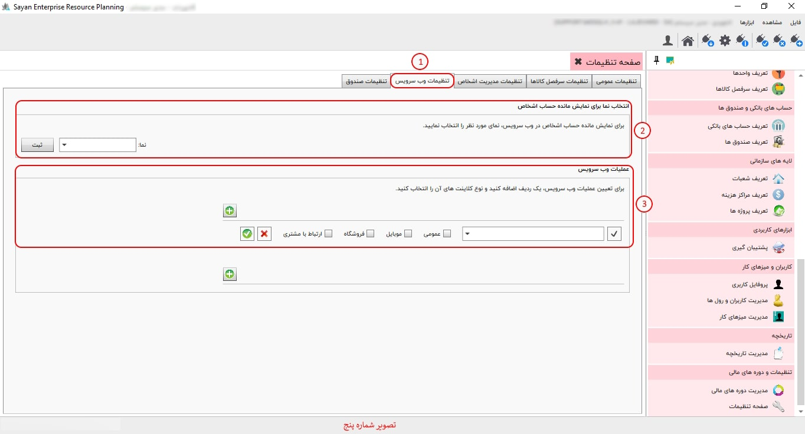

در صفحه تنظیمات امکانات «تنظیمات عمومی»، «تنظیمات سرفصل کالاها»، «تنظیمات مدیریت اشخاص» ، «تنظیمات صندوق»، «تنظیمات وب سرویس» برای شما پیاده سازی شده است.

برای ادامه مطلب به تصویر شماره دو مراجعه نمایید.

-تنظیمات عمومی (کادر شماره یک):در این بخش، شما میتوانید تنظیمات مربوط به ذخیره و بازخوانی اطلاعات را مدیریت کنید. یکی از گزینههای موجود در این قسمت، تعداد ارقام اعشار برای "فی" است. با تنظیم این گزینه، میتوانید دقت ارقام اعشار نمایش دادهشده برای مقدار "فی" را مشخص کنید.
-ذخیره و بازخوانی اطلاعات پایه (کادر شماره دو):در قسمت تنظیمات عمومی، امکان ذخیره و بازخوانی اطلاعات کالاها از طریق ابزارهای مربوطه فراهم شده است: با استفاده از دکمه «ذخیره در فایل»، میتوانید اطلاعات کالاهای ثبتشده را در قالب «XML» بر روی کامپیوتر خود ذخیره کنید. همچنین، برای بهروزرسانی اطلاعات کالاها، کافی است دکمه «خواندن از فایل» را کلیک کرده و فایل موردنظر را برای بازیابی اطلاعات انتخاب کنید. توجه داشته باشید که تنها اطلاعاتی قابل بازیابی هستند که در قالب «XML» ذخیره شده باشند.
-تنظیم تعداد ارقام اعشاری برای فی(کادر شماره سه):در تنظیمات عمومی، شما میتوانید تعداد ارقام اعشار برای مقدار "فی" را در تمامی فرمهای صدور و ویرایش مشخص کنید. این تنظیم به شما امکان میدهد تا دقت نمایش ارقام اعشار را از 0 تا 12 رقم اعشار تنظیم نمایید.
برای ادامه مطلب به تصویر شماره سه مراجعه فرمایید.

-تنظیمات سر فصل کالاها(کادر شماره یک):
-کنترل تعداد ارقام کد کالا هنگام ثبت کالا(کادر شماره دو):
-کنترل تکراری بودن کد فنی کالا هنگام ثبت کالا (کادر شماره سه):
برای ادامه مطلب به تصویر شماره چهار مراجعه نمایید.

"برای مشاهده ویدیو آموزشی مرتبط با این بخش، به لینک زیر مراجعه کنید:"
-تنظیمات مدیریت اشخاص(کادر شماره یک):
-کنترل تعداد ارقام کد شخصی هنگام ثبت شخص (کادر شماره دو):
تنظیم فیلدهای شخص هنگام ثبت شخص در فرم صدور سند (کادر شماره سه ):
برای ادامه مطلب به تصویر شماره پنج مراجعه نمایید.
-تنظیمات وب سرویس(کادر شماره یک):
-انتخاب نما برای نمایش مانده حساب اشخاص(کادر شماره دو):
-عملیات وب سرویس (کادر شماره سه):
برای ادامه مطلب به تصویر شماره شش مراجعه نمایید.

-تنظیمات صندوق (کادر شماره یک):
-عملیات صندوق (کادر شماره دو):